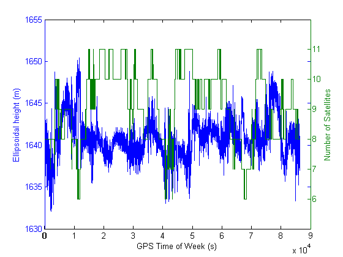
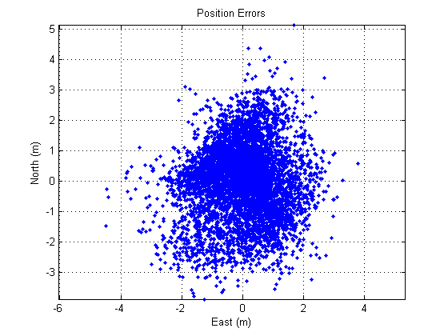
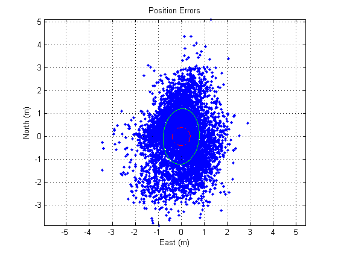

HW2 Problem 1: PRN generation
Contents
Initialize
fprintf('\n'); clearvars -except function_list pub_opt close all
1) Ellipsoidal height vs time
The variation of ellipsoidal height seems to vary more when fewer satellites are used in the position solution.
load('GPS2009L1L2_data.mat'); time = data(:,1); lat = data(:,2); long = data(:,3); ell_h = data(:,4); num_sat = data(:,5); [haxes, hline1, hline2] = plotyy(time, ell_h, time, num_sat); ylim(haxes(2), [min(num_sat)-1, max(num_sat)+1]); xlabel('GPS Time of Week (s)'); ylabel(haxes(1), 'Ellipsoidal height (m)'); ylabel(haxes(2), 'Number of Satellites');
2) Latitude/Longitude errors
The scatter looks more varied in the y direction (North/South) than the x direction.
mean_lat = mean(lat); lat_err = lat - mean_lat; mean_long = mean(long); long_err = long - mean_long; % Get the error arc-lengths re = 6378e3; % m NS_err = 2*pi*re*lat_err/360; EW_err = 2*pi*re*long_err/360; figure plot(EW_err, NS_err, '.') title('Position Errors') ylabel('North (m)') xlabel('East (m)') grid on axis equal hold on
3) Compute standard deviations, P, error ellipse, 50% CEP
nn = length(NS_err); err_radii = sqrt((NS_err.*NS_err)+(EW_err.*EW_err)); CEP_50_radius = err_radii(round(nn/2)); drawellipse(CEP_50_radius,CEP_50_radius,0,0,0,'r-.'); P = cov([EW_err NS_err]); % Eigenvalues of the covariance matrix are the principle components [evec,ev]=eig(P); ell_a=sqrt(ev(1,1));%, evec(:,1)' ell_b=sqrt(ev(2,2));%, evec(:,2)' angle=atan2(evec(2,1),evec(1,1)); drawellipse(ell_a,ell_b,angle,0,0,'g-');